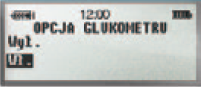

Stosowanie Kalkulatora Bolusa,
Bolus Wizard® z glukometrem
Bayer Contour® Link:
W przypadku stosowania
glukometru CONTOUR® LINK
wyniki pomiarów stężenia
glukozy z krwi kapilarnej są
automatycznie przesyłane
bezprzewodowo do pompy
Paradigm®. W sytuacji stosowania glukometru CONTOUR® LINK oraz funkcji Kalkulatora Bolusa w zasadzie można nie prowadzić dzienniczka samokontroli, ponieważ wszystkie dane są zapisywane w pamięci pompy. Dane te można sczytać przesłać do dostępnego online oprogramowania CareLink www.carelink.minimed.com , wydrukować i zabrać na wizytę lekarską.
Krok 1
W menu NARZĘDZIA przewiń w dół
i wybierz “Podłącz urządzenia” i
naciśnij ACT.
Krok 2
W menu WYBÓR URZĄDZENIA wybierz
“Glukometry” i naciśnij ACT.
Krok 3
W menu OPCJA GLUKOMETRU wybierz
“Wł.” i nacisnij ACT.

Krok 4
W menu ID GLUKOMETRU wybierz
“Dodaj ID” i naciśnij ACT.
Krok 5
Wprowadź numer SERYJNY*
swojego glukometru CONTOUR®
LINK firmy Bayer, za pomocą i
naciśnij ACT po wprowadzeniu każdej
cyfry w celu potwierdzenia.
W przypadku używania glukometru
CONTOUR® LINK firmy Bayer wraz z
Kalkulatorem Bolusa, Bolus Wizard®
odczyt stężenia glukozy we krwi
będzie zapamietany przez Kalkulator
Bolusa, Bolus Wizard® przez 15
minut po badaniu, tak że nie ma
konieczności ręcznego wprowadzania
tej wartości.
Bardziej szczegółowe informacje
znajdują się w instrukcji obsługii
glukometru.